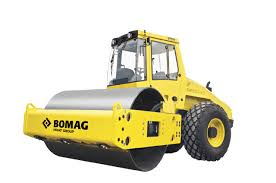
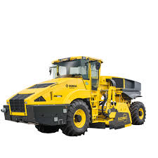

Sistem Manajemen Armada Alat Berat Terintegrasi

BOMAG TELEMATIC adalah solusi digital manajemen armada (fleet management) terintegrasi yang menggabungkan teknologi hardware sensor pintar, GPS, dan software berbasis cloud. Sistem ini dirancang khusus oleh BOMAG untuk memantau performa, lokasi, dan kondisi kesehatan alat berat secara real-time dari jarak jauh tanpa harus mendatangi unit di lapangan.
Sistem telematika ini memiliki fungsi vital dalam operasional konstruksi modern, antara lain:
BOMAG Telematic dapat bekerja secara akurat berkat sinergi dari beberapa komponen utama berikut:
Proses transmisi data pada BOMAG Telematic berlangsung melalui tahapan yang sistematis:
Tahap 1 (Pengumpulan): Saat alat berat beroperasi, sensor internal merekam data seperti suhu mesin, tekanan oli, konsumsi BBM, dan koordinat GPS.
Tahap 2 (Pengiriman): Modul telematika mengirimkan data tersebut melalui sinyal seluler atau satelit secara berkala ke Server Cloud BOMAG.
Tahap 3 (Pengolahan): Server mengolah data mentah tersebut dan mengelompokkannya menjadi informasi diagnostik, konsumsi bahan bakar, dan jam kerja.
Tahap 4 (Visualisasi): Pemilik armada membuka aplikasi BOMAG Telematic di laptop atau HP, dan semua informasi sudah siap dibaca dalam bentuk laporan yang rapi.
Dibandingkan sistem telematika standar, BOMAG memiliki beberapa keunggulan kompetitif:
Dari segi bisnis dan investasi, keuntungan yang didapatkan oleh customer sangat besar:

Implementasi Teknologi Telematika pada Jajaran Alat Berat BOMAG